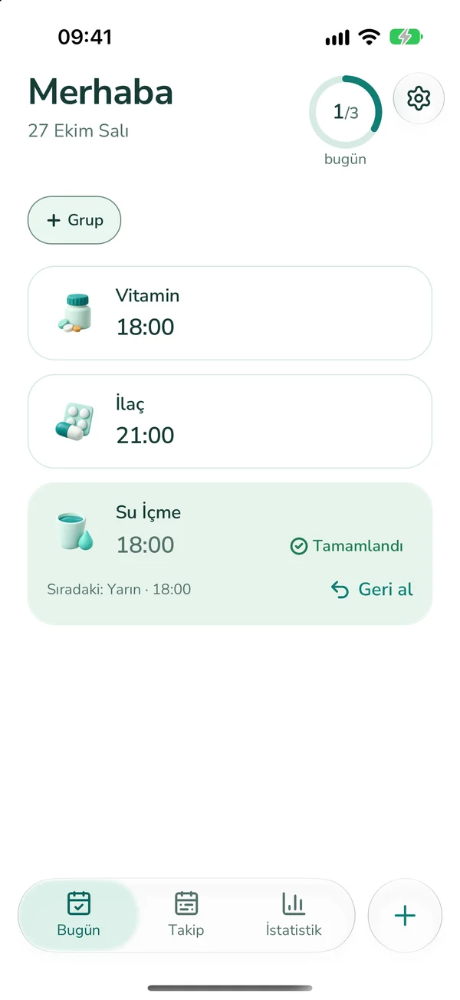

Günlük işlerin ve yenilemelerin vaktinde.
Hatırlatıcı kur, zamanı geldiğinde alarm veya bildirim al. Kira, fatura ve yenileme tarihlerini tek yerde gör.
App Store’da VaktindeAndroid sürümü kapalı testte.

Vaktinde ile neler yapabilirsin?
- Günlük ve tekrarlayan hatırlatmalar oluştur.
- Kira, araç muayenesi ve pasaport için kalan günleri takip et.
- Takvimden içe aktar, verilerini dosyaya yedekle ve geri yükle.
Ücretsiz plan ve Pro
Ücretsiz planda 3 hatırlatma, 2 grup ve 3 takip öğesi oluşturabilirsin. Dosyayla yedekleme ve geri yükleme de ücretsizdir.
Pro ile sınırsız kayıt, ek uyarılar, gelişmiş erteleme, 90 günlük ve 1 yıllık istatistikler ve ana ekran widget’ları açılır. Pro, aylık veya yıllık otomatik yenilenen abonelikle sunulur; App Store hesap ayarlarından iptal edebilirsin.
Verilerin
Hesap yok, reklam yok. Hatırlatma verilerin cihazında saklanır; Vaktinde sunucusuna gönderilmez. Cihazlar arasında otomatik eşzamanlama yoktur. Sistem yedeği ve dışa aktardığın dosyanın saklandığı yer kendi ayarlarına bağlıdır.
Yedek dosyası şifrelenmez; güvendiğin bir yere kaydet. Geri yükleme, bu telefondaki verilerin yerine dosyadakileri koyar.
Alarm izinleri
Gerçek alarm iOS 26 veya üzerini ve alarm iznini gerektirir. Diğer durumlarda, izin verilmişse normal bildirim kullanılır. Android’de kesin zamanlama ve tam ekran görünüm cihaz izinlerine bağlıdır.